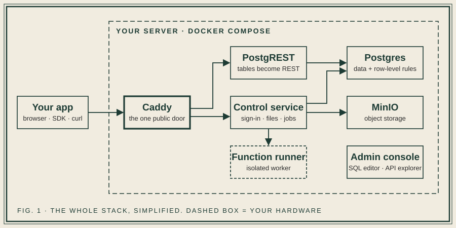
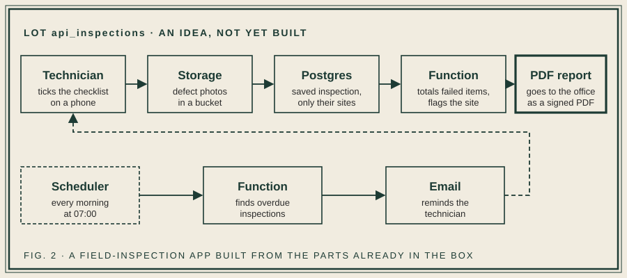

I got tired of rebuilding the same backend, so I built one I own
How Stead cuts the repeated work in a project, and what that does to dev time, docs and testing.
Every project I take on starts the same way. Someone describes a screen. I nod. Then I spend the first two weeks on things nobody asked for: login, password resets, roles, a file upload endpoint, a CRUD API for tables I already designed, and a document nobody will read that explains the API.
None of it is hard. That's the problem. It's work you can't skip and can't be proud of, and it eats the budget before the real product shows up.
So I built a backend I could reuse and keep. It's called Stead. You point it at a Postgres schema and you get a REST API, user accounts, file storage, serverless functions, a scheduler and PDF generation, all running on a server you control. This post is about what that changed for me, with real examples, and where it doesn't fit.
What you actually get
Stead is a few well-known pieces wired together. Postgres holds your data. PostgREST turns your tables and views into a REST API. A small NestJS service handles everything that isn't a plain data call: sign-in, MFA, storage, functions, the scheduler and the admin console. Caddy sits in front as the one public door.

You start it with Docker Compose. You create a project, run your schema in the SQL editor, and the API exists. Each project gets its own schema and its own database roles, so one install can serve several apps without them seeing each other's rows.
The part I care about most is where the rules live. Who can read what is decided by Postgres, through row-level security, not by code in some service I wrote at 11pm. If a rule is wrong, it's wrong in one place, and I can read it.
One honest caveat: after you create a new project, PostgREST needs a restart to see the new schema. It's a single command, but you do have to run it.
The first real test: a recruitment app
My first proper test was an applicant-tracking app. It has a hierarchy (client, then business development, department, team leads, recruiters, candidates), and every level should see only its own slice.
The whole thing is a React front end on top of Stead. There is no custom backend. The database side is a 603-line SQL file: 15 tables, 30 row-level security policies and 6 SQL functions. The front end is about 30 components talking to the API through a small typed client.
The 30 policies are the interesting number. In a conventional build, those rules end up scattered across controllers and middleware, and the only way to know they work is to hit every endpoint as every role. Here they sit in one file next to the tables they protect. When someone asked "can a recruiter see another department's candidates?", I opened the file and answered in a minute.
I've used the same setup for an approval workflow at an automotive-parts manufacturer. Different industry, same shape: people sign in, see what's theirs, push a record through stages, and print it. I can't name the client or show screens, and I won't. What I can say is that nobody asked me to build a login page, and that saved a lot of time.
Where the time goes (and doesn't)
I'm wary of invented benchmarks, so here are my own numbers, labelled as what they are.
[ESTIMATE: how long the auth, roles, CRUD API and file upload layer took you on previous projects, e.g. "about two weeks"]. On the ATS app, that layer was already there, so the work started at the schema and the screens. [ESTIMATE: how long the ATS app took end to end].
That's one developer's estimate across a couple of projects, not a study. Your mileage depends on how much of your project is the generic part. If most of it is clever domain logic, you'll save less.
Docs and testing are where it quietly pays
I didn't expect this part to matter as much as it does.
Docs. Stead generates an OpenAPI spec for the public integration surface, and the API explorer in the admin console lets a new teammate try calls without a separate tool. The API shape follows the schema, so the schema file is the documentation that can't go out of date. I still write about business rules. I no longer write about endpoints.
Testing. Most of what you'd test in a hand-built API is permissions: can role A do X, can role B not do Y. When those rules are database policies, you test them where they live, with plain SQL, as a given role against a known set of rows. There's less mock-heavy plumbing, because there's less plumbing. I'd be overselling it to say you need no other tests. You still test your functions and your front end. But the largest, most boring category gets smaller.
A use case you could build this weekend
Here's something I haven't built yet but would start tomorrow: a field-inspection app for a small maintenance company. Technicians walk a site, tick through a checklist, photograph defects, and the office gets a signed PDF report. Missed inspections get a reminder.
It's a good fit because it touches almost everything Stead has:
- Data: inspections, checklist items and findings in Postgres, with a policy so a technician only sees their own assigned sites.
- Storage: defect photos uploaded to a bucket, linked to the finding.
- Functions: when an inspection is submitted, a function totals the failed items and flags the site as needing follow-up.
- PDF: the report is generated on demand from the same data, so the office never reformats anything by hand.
- Scheduler and email: every morning, any inspection that's overdue triggers a reminder to the technician.

The core of the access rule is short:
create policy "technicians_own_sites" on api_inspections.inspections
for select using (
technician_id = auth.uid()
or api_inspections.current_role() = 'OFFICE'
);
Everything else is a schema, a few functions and a front end. No server code to write, deploy or keep alive.
Why self-host at all
Hosted backend services are good, and for plenty of projects they're the right call. I wanted three things they can't promise: my data on hardware I choose, no usage-based bill that grows with success, and the freedom to fix a problem myself instead of filing a ticket.
The cost is yours too. You run the server, you handle backups, you apply upgrades. If nobody on your team is willing to do that, don't self-host. Pay for the managed option and move on. I'd rather you know that before you try anything.
When Stead isn't the answer
- You need a global, multi-region setup with automatic failover from day one.
- Your product is mostly unusual real-time infrastructure, not forms, records and files.
- Nobody on the team is comfortable with SQL.
- You want a vendor to call at 3am.
If none of that is you, you may save real time.
Questions I'd like answered
Stead is early. I'd rather hear what's wrong with it than be told it's great.
- What backend work do you rebuild on every project?
- Do you self-host, or do you avoid it? Why?
- What would stop you from trying this on your next project?
- Which app of yours would you point it at first?
You can find the code on GitHub. If you'd rather talk it through, or you have a project you want help with, use the contact form on this site. I read every message.